75MHz LIVE PUB 로고 사용 시안
원본 단색 로고에서 만든 파생 파일이다. 모든 값은 더미 화면이다. 대비율은 WCAG 2.1 공식으로 계산했다.
1. 배경별 대비

2. 작은 크기에서 LIVE PUB 읽힘
원본은 가로가 길어 높이 40px에서 LIVE PUB 글자가 약 3px이다. 축약형(75MHz 아래 LIVE PUB을 크게 다시 배치)은 같은 높이에서 약 2배 크다.
원본 높이 40px
LIVE PUB 읽기 어려움
LIVE PUB 읽기 어려움
축약형 40px
최소 허용 안 함
최소 허용 안 함
축약형 56px
최소 크기 (상단 바)
최소 크기 (상단 바)
축약형 80px
모바일 첫 화면
모바일 첫 화면
원본 높이 120px 이상
큰 화면·인쇄·QR 카드
큰 화면·인쇄·QR 카드